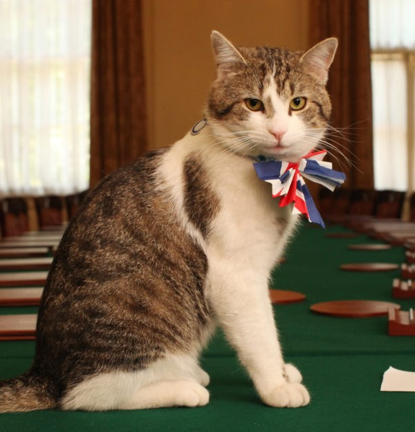
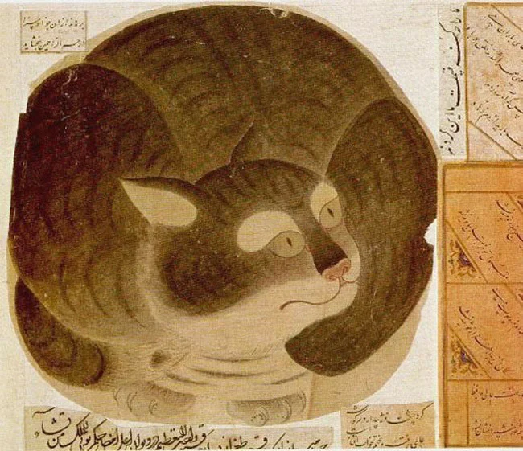
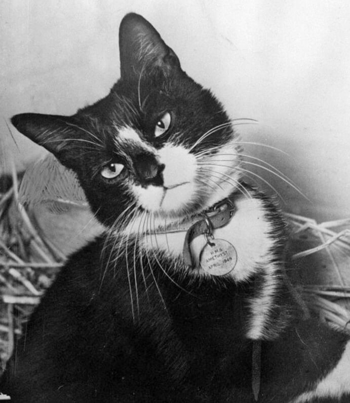
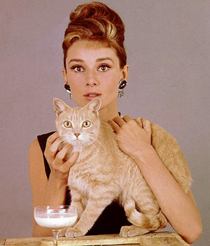
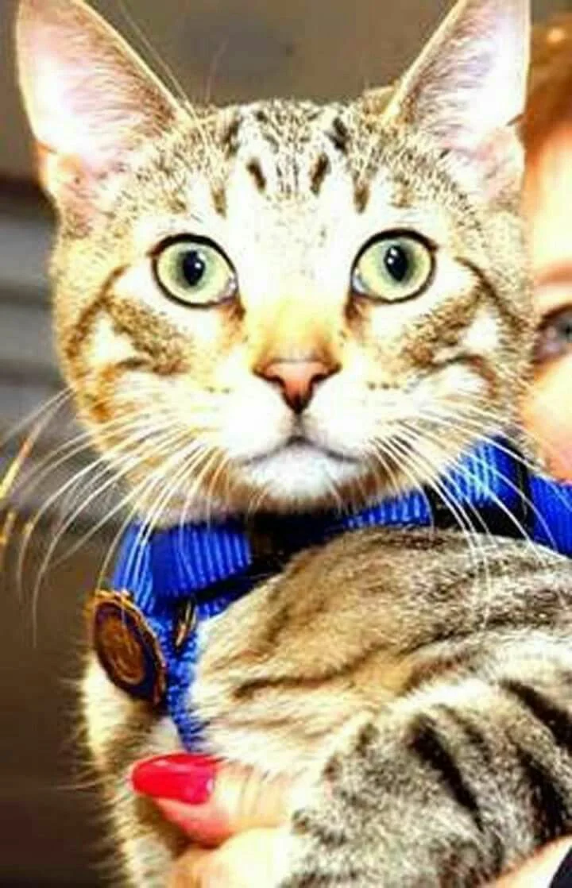
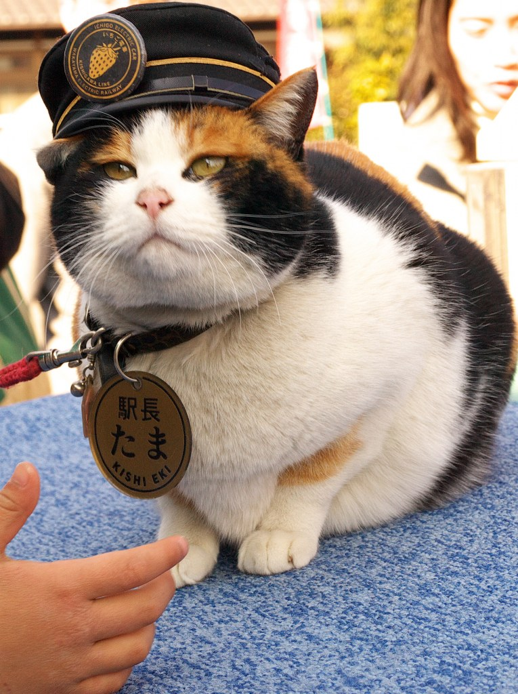
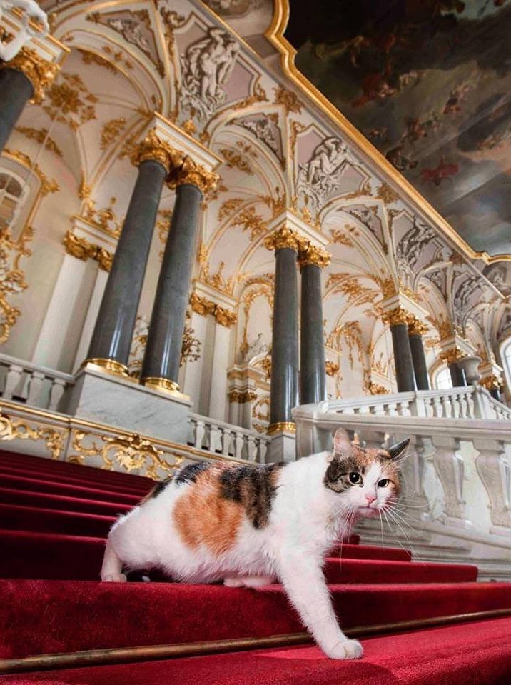

Знаменитые коты
Хамфри и Ларри |
 | В резиденции премьер-министра Великобритании проживает кот, статус которого звучит как главный мышелов правительственной резиденции. Только двум котам — Хамфри и Ларри, этот титул был присвоен официально. |
Муизза |
 | Так звали кошку пророка Мухаммеда. Согласно легендам, если кошка спала на одежде, Мухаммед не будил её, а выбирал что-либо другое из своего гардероба. Однажды, когда она уснула на рукаве сложенного рядом халата, пророк предпочёл отрезать кусок от рукава, чтобы не тревожить её сон. Во время проповедей Мухаммеда Муизза часто лежала у него на коленях. |
Непотопляемый Сэм |
 | Корабельный кот служил в годы Второй Мировой войны на немецком линкоре, британском эсминце, а позже на авианосце, пережил гибель всех трёх кораблей и умер на берегу в 1955 году. |
Оранджи |
 | Этот рыжий кот был кинозвездой в 1950—1960-х годах. Его дрессировщиком был Фрэнк Инн. Наиболее известным из фильмов с участием Оранджи стал «Завтрак у Тиффани» (1961), в котором он сыграл безымянного кота Холли Голайтли, героини Одри Хепбёрн. Оранджи — единственный кот, награждённый двумя премиями «Пэтси» (американский аналог «Оскара» для животных) |
Сокс |
 |
Кот был любимым питомцем семьи президента США Билла Клинтона во время его президентства. Сокс был принят в семью Клинтонов в 1991 году, после того, как он прыгнул в объятия Челси Клинтон в то время, когда она выходила из дома своего учителя музыки в Литл-Роке. |
Фред |
 | Кот прославился тем, что работал в департаменте полиции Нью-Йорка и помог разоблачить несколько преступников. 2006 года Фред был зачислен в офис бруклинского окружного прокурора в качестве тайного агента. Полицейские выдавали Фреда за больного кота с целью разоблачить одного ветеринара, который подозревался в мошенничестве, работе без лицензии, хулиганстве и насилии над животными. Благодаря работе Фреда ветеринар был разоблачён и привлечён к уголовной ответственности. |
Тама |
 | Кошка является … станционным смотрителем и исполнительным директором станции Киси! В апреле 2006 года железнодорожная компания Вакаямы уволила всех сотрудников станций в попытке сократить расходы. В качестве станционного смотрителя была выбрана Тосико Кояма, бакалейщица из окрестностей. Кояма взяла на попечение Таму и других бродячих кошек и кормила их на станции. В январе 2007 года железнодорожные чиновники решили официально назвать Таму станционным смотрителем. |
Эрмитажные коты |
 | Считается, что история эрмитажных котов начинается с привезённого из Голландии Петром Великим кота, которого поселили в деревянном Зимнем дворце. По преданию, кота звали Василием. Указ императора повелевал «иметь при амбарах котов, для охраны таковых и мышей и крыс устрашения». |